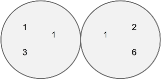
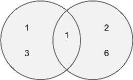

Yesterday we discussed different characteristics of a set. By default, sets contain no duplicates, but a type that can is called a multiset. A normal set does not track the counts of values, but a multiset does.
Sets that keep elements in strict order are ordered sets (or ordered multisets!). Those that don’t are unordered sets/multisets. There are costs associated with removing duplicates or maintaining a set’s order, so if we add values without sorting or removing duplicates, we have an unordered multiset.
When working with more than one set, we can combine them in various ways. We can simply merge two sets, resulting in a multiset that includes all values from both sides. Merging always results in a multiset, because every duplicate is kept. A second option is to get the union of sets A and B, which would include all values from one set, plus anything from the other set that we haven’t already included. Conceptually, this equates to a logical OR: to be included in this union, an element must be found in one set or the other (or both). A third type of set combination is an intersection, conceptually similar to a logical AND. To be included in an intersection, an element must be found in one set and the other.
A merge is simply the sets, together.
A union contains values in either set: [1,3,1,2,6]
An intersection contains only values in both sets: [1]
Shown above, for multisets these operations affect value counts accordingly. For multisets containing the same value (‘1’ above), union retains the higher count (3 ‘1’s are retained); intersection retains the lower count (2 ‘1’s are retained). Given ordered multisets [1,1,1,3] and [1,1,2,6]: the merger is [1,1,1,1,1,2,3,6]; the union is [1,1,1,2,3,6]; the intersection is [1,1]. Lastly: if a set contains all the values of another set, like [1,2,2,3] and [2,3], the second is a subset of the first.
Intersect Sorted Arrays
Efficiently combine two sorted arrays into an array containing the sorted multiset intersection of the two. Example: given [1,2,2,2,7] and [2,2,6,6,7], return [2,2,7].
Intersect Sorted Arrays (dedupe)
Efficiently combine two sorted multiset arrays into an array containing the sorted set intersection of the two. Example: given [1,2,2,2,7] and [2,2,6,6,7], return [2,7].
Chapter 13 – Sets and Priority Queues
As you proceed through this chapter, put yourself in a technical interview mindset with these concepts:
Don’t panicThink out loud Clarifying questionsError and corner casesExample inputs
DiagramsAdmit when its suboptimal (but keep going)“What are we optimizing for?”
Throughout these challenges, remember the basic set operations and characteristics:
MergerUnionIntersectionSet / MultisetOrdered / UnorderedSubset
Union Sorted Arrays
Efficiently combine two already-sorted arrays into a new sorted array containing the multiset union. Example: given [1,2,2,2,7] and [2,2,6,6,7], return [1,2,2,2,6,6,7].
Intersection Unsorted Arrays (in-place)
Intersect two unsorted arrays, putting the unsorted multiset result ‘in-place’ into the first. Running ‘in-place’ also means you cannot create any data structure to hold values, such as an associative array. Given [2,7,2,1,2] and [6,7,2,7,6,2], you could change the first to [7,2,2] in any order.
Union Sorted Arrays (dedupe)
Combine two sorted arrays into a new sorted array containing the union set (i.e. remove duplicates). Example: given [1,2,2,2,7] and [2,6,6,7], return [1,2,6,7].
Intersection Unsorted Arrays
Intersect two arrays to create an unsorted multiset. You can use an additional data structure type if it is helpful. However, don’t alter the arrays; return a new one. Given the arrays [6,7,2,7,6,2] and [2,7,2,1,2], return a new array containing [7,2,2] in any order. Is ‘non-in-place’ easier? Faster?
Union Unsorted Arrays
Return a new unsorted union multiset of two arrays; do not alter the originals. For [2,7,2,1,2] and [6,7,2,7,6,2], you could return [7,2,7,2,2,1,6,6]. How efficient can you be, for long arrays?
Chapter 13 – Sets and Priority Queues
This chapter we dive further into Set Theory. Put yourself into the mindset of a technical interview during this chapter’s algorithm challenges, using the following concepts:
mergerunionintersectionset / multiset
ordered / unordered in-placestablesubset
If needed, refer to previous “Union Unsorted Arrays” solution for starting points to these challenges:
Union Unsorted Arrays (in-place)
Put union multiset of two unsorted arrays into the first. Given ([2,7,2,1],[6,7,2,6]), change the first to include (in any order) the elements [2,7,2,1,6,6].
Subset Sorted Arrays
Given two sorted arrays, return a boolean whether the second is a subset of the first. Can you use their sorted nature to your advantage?
Union Unsorted Arrays (no duplicates)
Return the union set (remove any duplicates) of two unsorted arrays. Given ([2,7,2,1], [6,7,2,6]), return (in any order) [2,7,1,6].
Subset Unsorted Arrays
Given two unsorted arrays, return whether second is subset of first. Solve in O(N) runtime.
Second: can you solve this in-place? How does this affect your runtime performance?